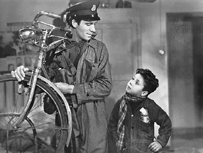

El cine italiano, desde sus inicios a principios del siglo XIX hasta la segunda guerra mundial, ha sido influenciado por el cine de Hollywood. De todos ellos, solo un movimiento rompe con el lenguaje cinematográfico estadounidense y crea su propia forma. Este movimiento fue llamado Neorrealismo italiano y, ciertamente, constituye hasta hoy la mayor contribución de Italia a la historia y a la evolución del cine.
